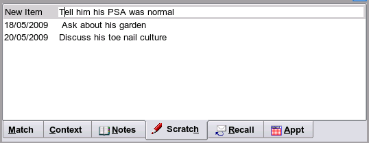
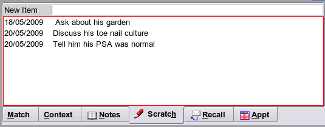
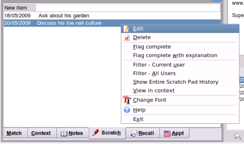

Adding a ScratchPad Item
The purpose of the scratch pad has been described elsewhere, so if you are unfamiliar with this please see in the clinical section documention for the
Scratch Pad
Select the tab marked 'Scratch' and type some text in the new item textbox.

Hitting the enter key will then add your new item to the list as shown below, which will then become highlighted in red to indicate unsaved data.

When you later file your result, these changes will be automatically saved. See
Filing Normal Results
Should you make an error your text can be edited from the popup menu on this list.
